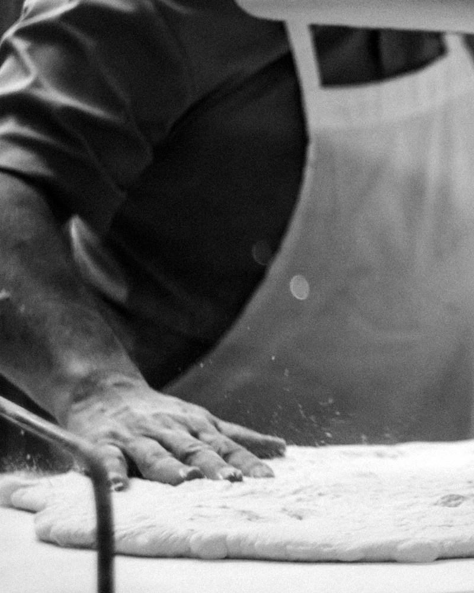
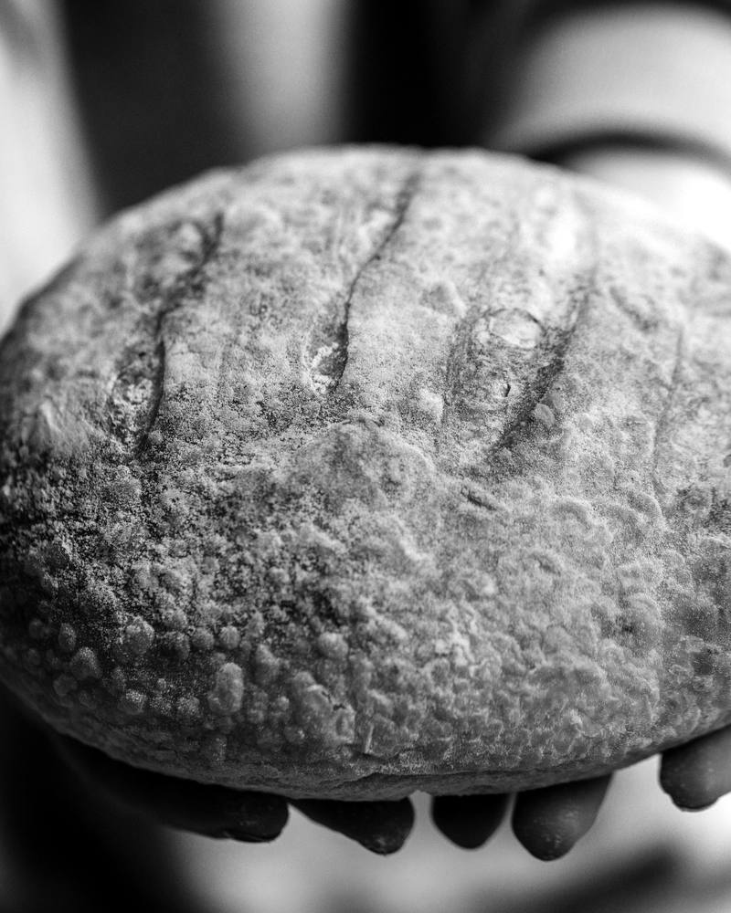
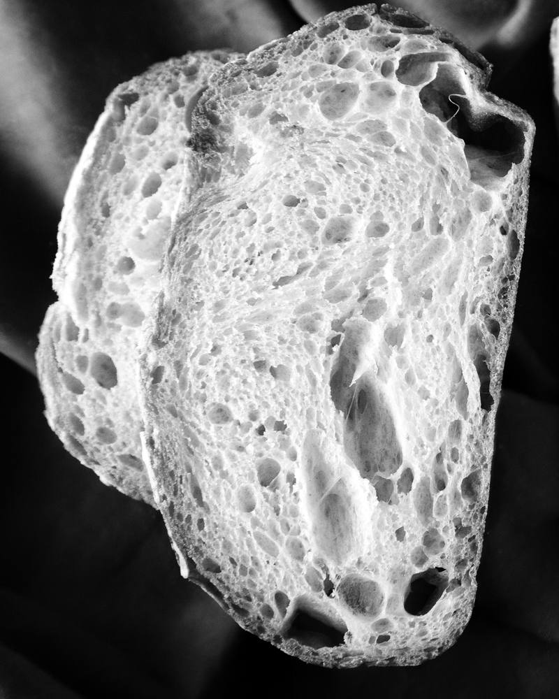

O pão de amanhã encomenda-se hoje.
Até às 18h00. Levanta-se a partir das 7h30 e paga-se ao balcão.
Encomendar para amanhãFornada de terça, 6 de outubro
Contado às 11h40. Atualiza-se a cada encomenda.
-
Trigo com fermento natural 800 g 3,80 €Restam 12 de 40
-
Broa de milho 4,20 €EsgotadaVolta na fornada de quinta.
-
Centeio 4,50 €Restam 7
Três pães, mais nenhum
A massa leva farinha, água, sal e o fermento que alimentamos todos os dias desde 2019. Não leva fermento de pacote nem melhorantes.
Fermenta devagar, de um dia para o outro, e coze de madrugada no forno de lastro. Por isso se encomenda na véspera: amassamos só o que vai ser levantado.
- Trigo com fermento natural, 800 g
- Côdea estaladiça, miolo aberto e húmido. Aguenta quatro dias embrulhado num pano.
- Broa de milho
- Milho amarelo e um terço de centeio, à maneira do Minho. Só às terças e quintas.
- Centeio
- Denso e ácido, com sementes de alcaravia. Corta-se fino e dura uma semana.



A semana da fornada
O trigo e o centeio cozem todos os dias de forno; a broa só às terças e quintas, porque o milho se escalda na véspera.
| Ter | Qua | Qui | Sex | Sáb | Dom | |
|---|---|---|---|---|---|---|
| Trigo com fermento natural | x | x | x | x | x | x |
| Broa de milho | x | . | x | . | . | . |
| Centeio | x | x | x | x | x | x |
x: coze nesse dia. À segunda-feira o forno não acende, por isso a fornada de terça encomenda-se ao domingo.
Como se encomenda
-
Escolha até às 18h00
Diga que pães quer e quantos. Depois dessa hora a fornada de amanhã fecha.
-
Recebe o número da encomenda
Guarde-o. É por ele que separamos o seu pão.
N.º 0412
-
Levante amanhã a partir das 7h30
O pão fica guardado em seu nome até ao fecho, às 14h00.
-
Pague ao balcão
Paga quando levanta, nunca antes. Carimbamos o talão.
N.º 0412Pago
Encomendar para amanhã
Levantar
De terça a domingo, das 7h30 às 14h00. O pão fica guardado em seu nome até ao fecho; depois disso vai para o balcão.
Pagar
Ao balcão, quando levanta. Aceitamos formas de pagamento a confirmar. Não se paga nada ao encomendar.
Falar connosco
Rua de Cedofeita, Porto. Telefone número a confirmar, nas horas de balcão.